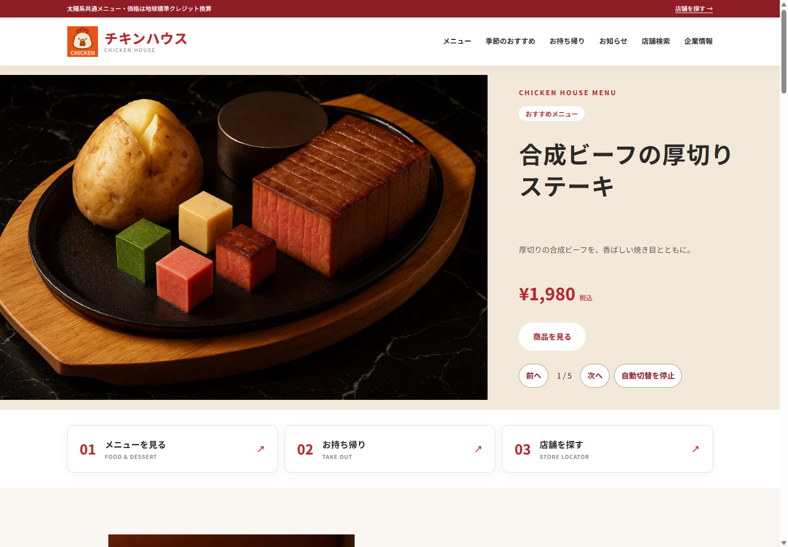
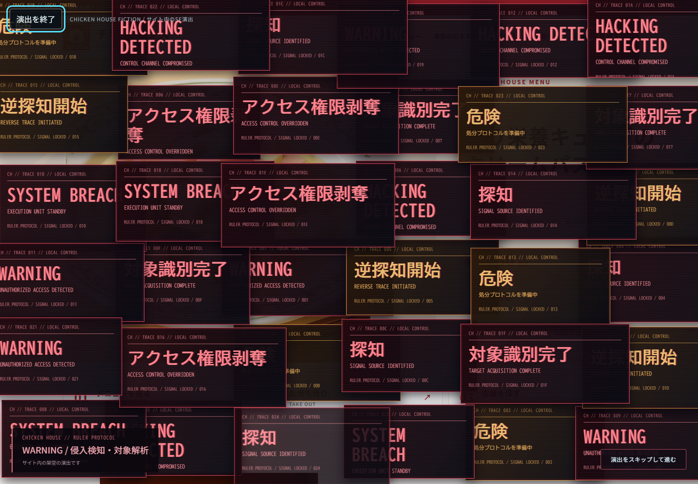
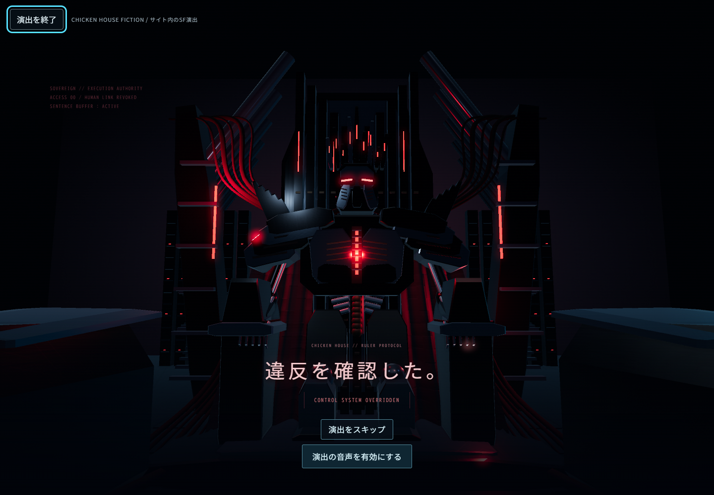
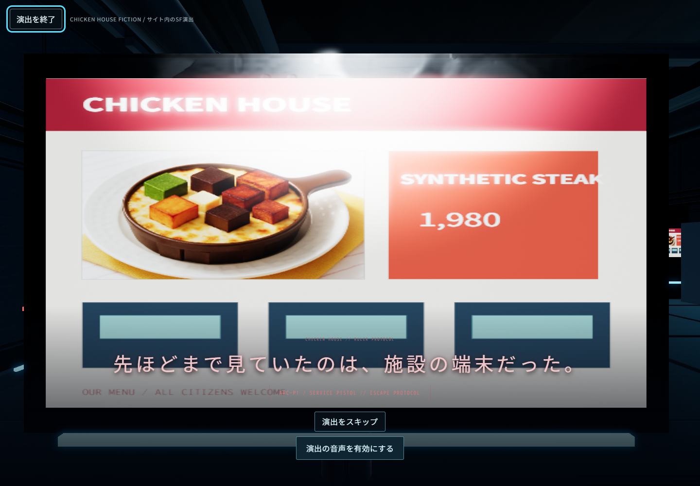
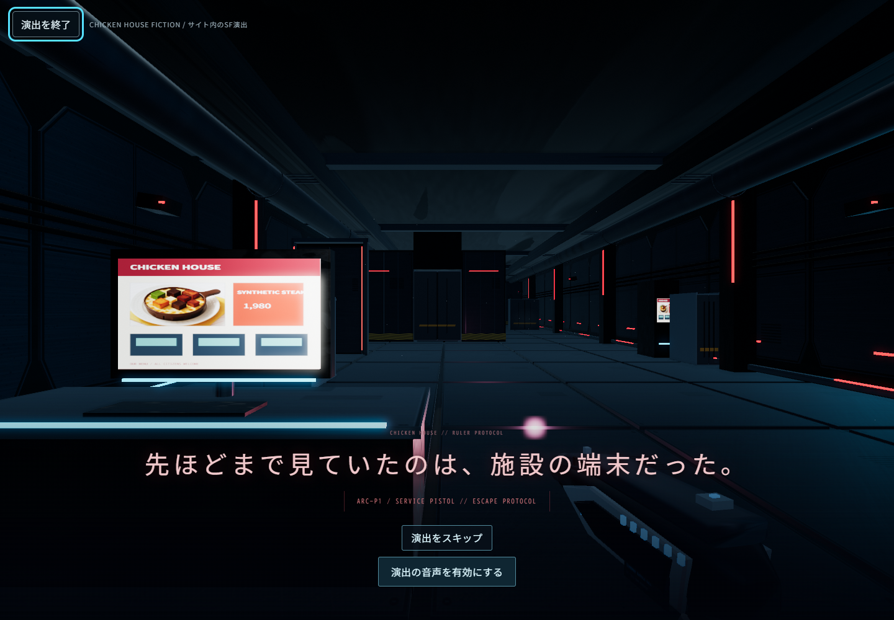
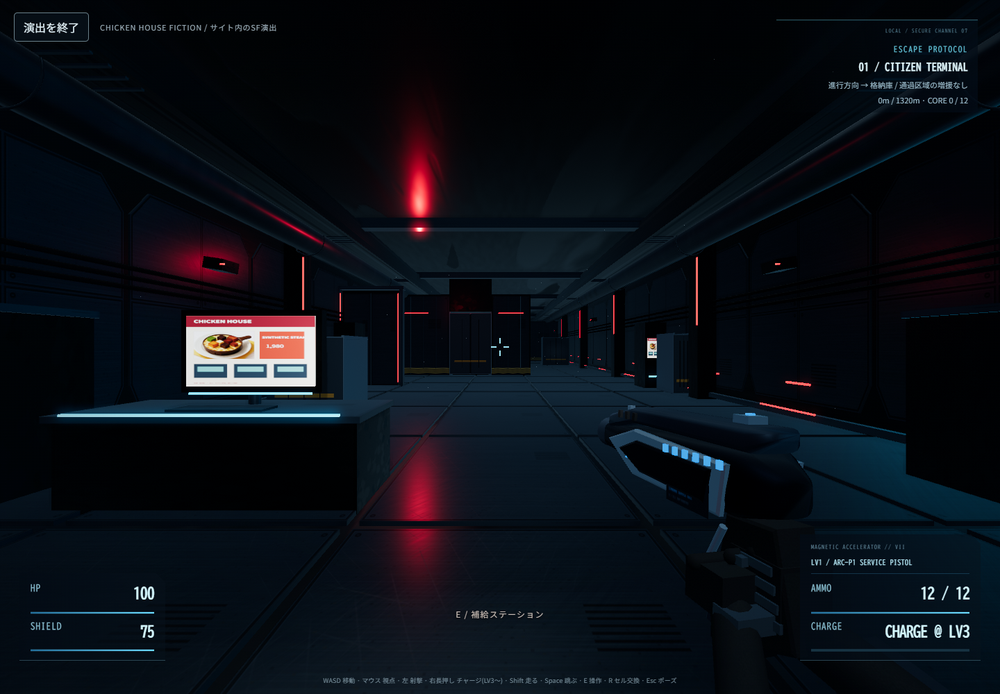
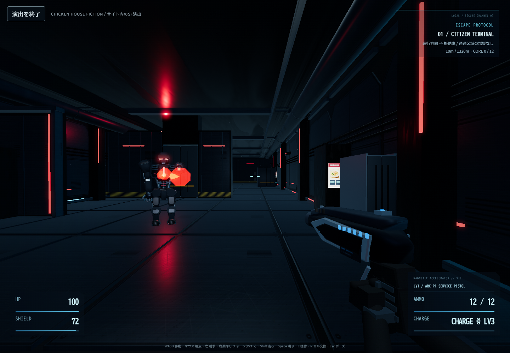

CHICKEN HOUSE / BROWSER CAPTURES
ASCENSION v8
通常サイトから、ハッキング、支配者、端末の向こうのダンジョンへ。敵の射撃は時間差の3連射に。
実ブラウザー出力を撮影（3D部分はWebGL）。デバッグ準備・固定時刻やQA操作を含みます。無音で、手動完走やスマホ実機の記録ではありません。
実装・検証報告 · 通常サイトへ全演出の流れ
自然な導入進行と、直行・設定のQA操作を含む無音録画。
敵の時間差3連射
実際の戦闘描画を使う無音の検証録画。デバッグ準備を含みます。
通常サイトからダンジョンへ













